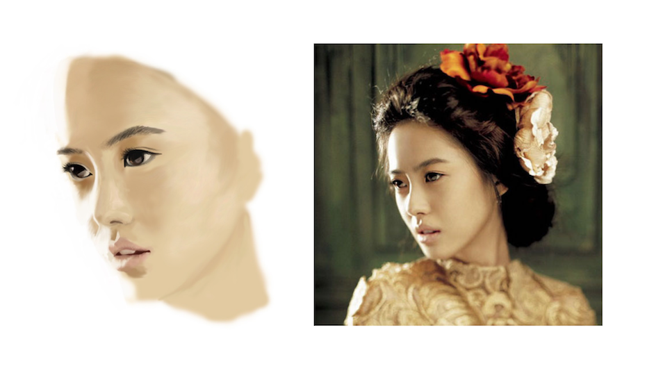

Inside the life of a curious 20s-something doodling, writing, and wandering about New York City



I first fell in love with Go Ara, a South Korean actress and model, in TV series Reply 1994, which was my favorite among the Reply series. I love the colors of this photo of her in Singles magazine and the way the light hits the side of her face.
This unfinished piece was drawn in Adobe Photoshop.